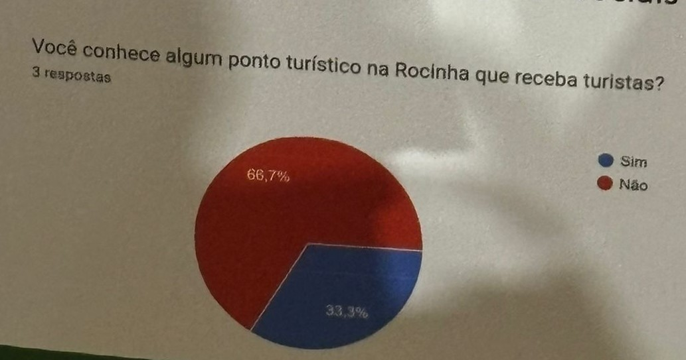
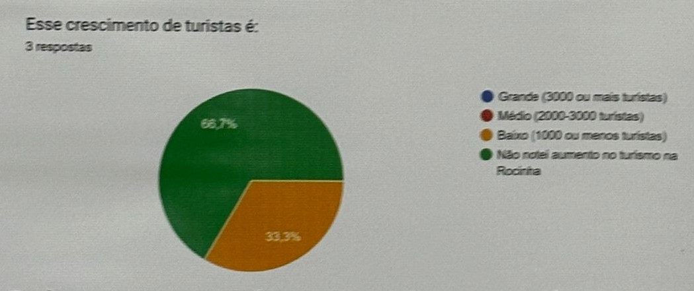

Introdução
O estudo analisou o impacto das mídias sociais no turismo da Rocinha, comunidade do Rio de Janeiro. Apesar do potencial turístico da região, marcado por sua cultura, a pesquisa identificou desafios como a baixa receptividade local e a necessidade de mudar a percepção negativa sobre o turismo em favelas. De acordo com os moradores, "[ ... ] os aspectos mais positivos da favela são: a vista, o comércio, os projetos sociais, a mata e o artesanato.", que atraem os turistas, mas a divulgação limitada impede que um número maior de visitantes descubra esses atrativos. O estudo conclui que divulgação e redes sociais são essenciais para promover o turismo benéfico para a comunidade.
Procedimentos Metodológicos
A pesquisa coletou dados usando metodologia quantitativa, qualitativa e descritiva. Foram aplicados questionários via redes sociais direcionados a moradores da comunidade, com questões opcionais e objetivas, que tem como objetivo a busca por entender como a divulgação da Rocinha nas redes sociais atrai turistas e qual o impacto disso na vida local. Além disso, foi feita uma revisão de estudos literários sobre o tema, em artigos e livros.
Resultados e Discussão
Uma pesquisa realizada na comunidade da Rocinha mostrou que o turismo na região ainda enfrenta desafios. Apesar de os moradores reconhecerem o potencial econômico do turismo, a pesquisa revelou que a maioria não conhece os pontos turísticos locais e que a divulgação da Rocinha nas redes sociais é limitada.
Os resultados indicam que a comunidade precisa investir mais em divulgação e infraestrutura para tornar o turismo na Rocinha mais atrativo e sustentável.
Embora a arte e a cultura sejam vistas como elementos importantes para atrair visitantes, a falta de informações e a pouca visibilidade da Rocinha nas plataformas digitais impedem um crescimento significativo do setor.
Considerações finais
A pesquisa revelou que, apesar de existirem atrativos turísticos na Rocinha, principalmente relacionados à cultura local, a divulgação desses pontos é muito baixa nas mídias sociais. Isso resulta em um baixo número de visitantes, com um público-alvo limitado e pouca visibilidade nacional e internacional devido à falta de informações em outros idiomas. A curiosidade pela cultura local, muitas vezes transmitida por meio de fotos e vídeos nas redes sociais, tem contribuído para um pequeno crescimento do turismo, desafiando a visão negativa e estereotipada da comunidade. No entanto, a falta de uma estratégia de marketing mai profissional impede que a Rocinha alcance seu pleno potencial turístico.
Referências
FREIRE-MEDEIROS, B. Entre tapas e beijos: a favela turística na perspectiva de seus moradores. Sociedade e Estado, v. 25, n. 1, abr. 2010